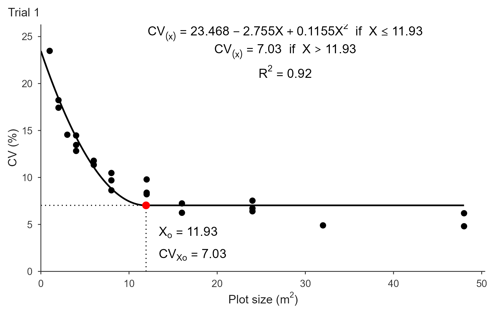
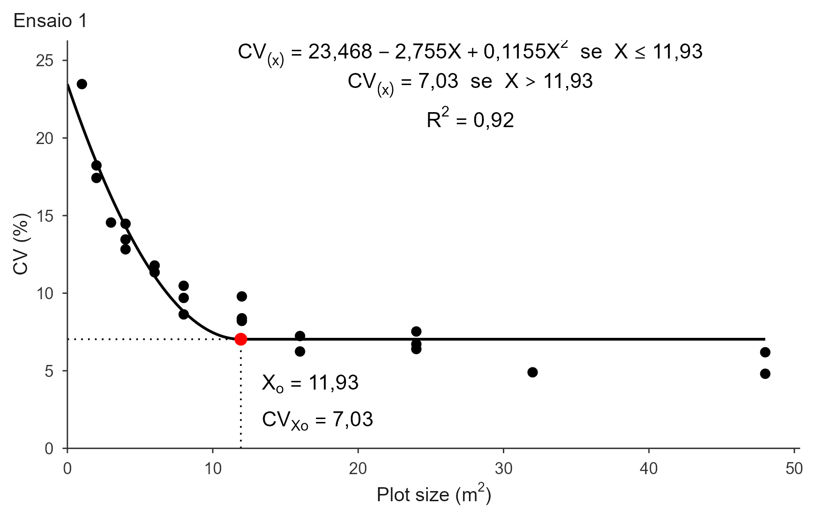

qrp.Rmd
library(trialSize)The Quadratic Response Plateau model answers the same question as the LRP, but replaces the straight descent with a curve:
The plateau starts where the parabola reaches its vertex, so the two pieces meet smoothly (no kink, unlike the LRP). That gives closed forms for both quantities of interest:
For the curve to descend and then flatten, and .
Because the descent is curved rather than straight, the QRP stays above a straight line for longer and reaches its plateau later. In practice this means QRP almost always gives a larger optimum than LRP, which in turn gives a larger one than the MCM. That ordering (MCM < LRP < QRP) is reported across many crops and is not a defect of any of the methods: they answer the same question with different assumptions about the shape of the decay.
The published implementations fit this model with nls()
or nlsLM() and fixed starting values. That is fragile: the
starting values are not derived from the data, and a failure to converge
can pass silently.
fit_qrp() uses the same grid-search strategy as
fit_lrp(). Once
is fixed, the model can be written as
which is linear in the plateau level
and the curvature
.
So each candidate breakpoint is fitted by ordinary least squares, and
the one with the smallest residual sum of squares is returned. The
reported a, b, c are converted
back to the usual parametrization via
and
.
The result is numerically identical to a converged nls()
fit, without the starting values.
Original method: Peixoto, A. P. B., Faria, G. A. & Morais, A. R. (2011). Modelos de regressão com platô na estimativa do tamanho de parcelas em experimento de conservação in vitro de maracujazeiro. Ciência Rural, 41(11), 1907-1913.
The implementation is validated against published results in the package tests; see Cargnelutti Filho, A., Loro, M. V., Ortiz, V. M. & Andretta, J. A. (2025). Determinação do tamanho de parcela para avaliar a massa de parte aérea de grão-de-bico. Revista Vivências, 21(43), 499-513.
The bundled simulated uniformity trial
(?uniformity_trial), the same data used throughout the
package.
grid_mat <- function(t)
as.matrix(uniformity_trial[uniformity_trial$trial == t,
grep("^col", names(uniformity_trial))])
tab1 <- calc_cv_shapes(grid_mat("T1"))
X <- tab1$x
CV1 <- tab1$cv
CV2 <- calc_cv_shapes(grid_mat("T2"))$cv
CV3 <- calc_cv_shapes(grid_mat("T3"))$cv
fit <- fit_qrp(x = X, cv = CV1)
fit
#> Quadratic Response Plateau (QRP) fit
#> Breakpoint (Xo): 11.932
#> CV at breakpoint: 7.031
#> R2: 0.918 R2 adj: 0.910 RMSE: 1.324 MAE: 1.069m² for trial 1, noticeably larger than the LRP estimate of about 9.2 m² on the same data: the smooth join always pushes the optimum out.
summary(fit)
#> Model coefficients:
#> a b c
#> 23.4681004 -2.7551190 0.1154508
#>
#> Goodness of fit:
#> Breakpoint Breakpoint_Response R2 R2_adj
#> 11.9320000 7.0310606 0.9177688 0.9095457
#> RMSE MAE AIC BIC
#> 1.3237244 1.0690865 86.1718395 90.7138163
#> SSE MSE
#> 40.3016648 1.7522463The QRP reports more fit statistics than the LRP: alongside
R2 and RMSE it returns R2_adj
(adjusted for the extra parameter), MAE, SSE
and MSE.
The closed forms can be checked directly against the coefficients:
The figure follows the same layout as the LRP, with the quadratic term in the annotated equation:
plot(fit, title = "Trial 1")
plot(fit, title = "Ensaio 1", decimal_mark = ",", cond_word = "se")
The curvature coefficient c is small, so it gets its own
decimal control, digits_c (4 by default), separate from
digits_coef for a and b.
plot(fit, title = "Trial 1",
save = TRUE, file = "trial1_qrp.pdf", format = "pdf",
width = 18, height = 12, units = "cm")The data-frame interface is identical to fit_lrp():
trials <- rbind(
data.frame(x = X, cv = CV1, trial = "Trial 1"),
data.frame(x = X, cv = CV2, trial = "Trial 2"),
data.frame(x = X, cv = CV3, trial = "Trial 3")
)
res <- fit_qrp(trials, x = "x", cv = "cv", trial = "trial")
#> Using x = 'x', cv = 'cv', trial = 'trial' -> 3 trials.
res
#> QRP fits for 3 trials
#>
#> trial a b c breakpoint plateau R2 RMSE AIC
#> Trial 1 23.4681 -2.7551 0.1155 11.932 7.0311 0.9178 1.3237 86.172
#> Trial 2 20.4943 -1.5222 0.0338 22.489 3.3775 0.8666 2.1062 107.535
#> Trial 3 23.1974 -2.4046 0.0839 14.328 5.9705 0.8298 2.2373 110.314
#> BIC n_local
#> 90.714 0
#> 112.077 0
#> 114.856 0The summary table carries the extra c column, since the
QRP has three coefficients. The three breakpoints average 10.25 m², the
article’s QRP figure.
res$fits[["Trial 3"]]
#> Quadratic Response Plateau (QRP) fit
#> Breakpoint (Xo): 14.328
#> CV at breakpoint: 5.971
#> R2: 0.830 R2 adj: 0.813 RMSE: 2.237 MAE: 1.660
plot(res, label_size = 3)search_range and step behave exactly as in
fit_lrp():
fit_qrp(X, CV1, search_range = c(6, 15))$parameters["Breakpoint"]
#> Breakpoint
#> 11.932
fit_qrp(X, CV1, step = 0.01)$parameters["Breakpoint"]
#> Breakpoint
#> 11.93There is no method argument here. The LRP has one
because the published procedure fits the descending line using only the
pre-breakpoint points; the QRP has no such variant.
c <= 0):
the parabola opens downward or is flat, so the “descend then plateau”
shape does not hold for these data.Fitting all three CV-based methods on the same trial shows the usual ordering:
data.frame(
method = c("MCM", "LRP", "QRP"),
Xo = c(fit_mcm(X, CV1)$parameters["Breakpoint"],
fit_lrp(X, CV1)$parameters["Breakpoint"],
fit_qrp(X, CV1)$parameters["Breakpoint"]),
row.names = NULL
)
#> method Xo
#> 1 MCM 4.494865
#> 2 LRP 9.159000
#> 3 QRP 11.932000Which one to report is a judgement call. The larger optimum is the conservative choice: it buys more precision at the cost of more field area. The validation article recommends the LRP value as its overall answer, while noting that LRP and QRP delivered statistically indistinguishable precision at the optimum.
See vignette("lrp") and vignette("mcm") for
the other two methods, and vignette("replicates") for
turning
into a number of replications.